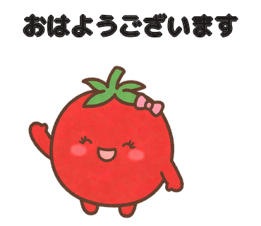
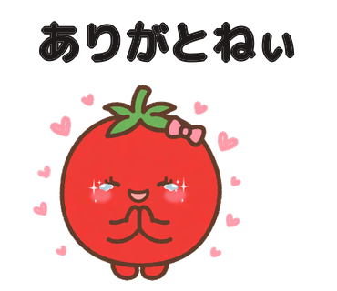
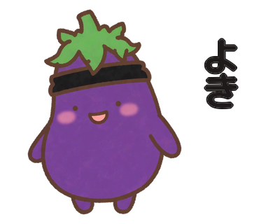
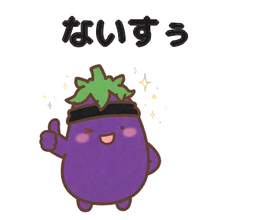

ナスとトマト 共同編集ページ
LINEスタンプ全40案を、ゆうきとゆりっぺの2人で確認して確定まで持っていくページのUI案です。気に入った案の番号を教えてください。
案1
カードグリッド型
スタンプをカードで並べ、状態チップと進捗バーで全体が見渡せる。Mercari風の親しみやすい見た目。



案2
リスト＋詳細型
左の一覧から選ぶと、右に大きなプレビューと編集パネル。1件ずつじっくり直す作業に向く。




案3
カンバン型
ネタ／作画中／確認待ち／確定の列で進み具合を管理。どこで止まっているか一目で分かる。


案4
チャット風型
LINEのトーク画面のようにスタンプが並び、そのまま2人のコメントが付く。普段のやり取りの延長で確認できる。
案5
テーブル型
行一覧でサムネ・セリフ・両者の確認を一括管理。残り件数を潰していく実務向けの形。
※ 各案はデザイン確認用のモックです。ボタンやチェックは見た目の確認用で、データは保存されません。